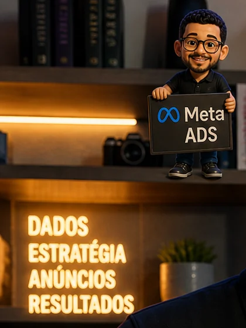

Meta Ads
Instagram e Facebook · cria demanda
Alcance pessoas com o perfil certo antes mesmo de elas pesquisarem. Ideal para gerar contatos, vender produtos, divulgar serviços e fortalecer a marca.
- Estrutura de campanhas por objetivo
- Criativos e testes A/B contínuos
- Rastreamento correto (Pixel e API de Conversões)
- Remarketing para quem já demonstrou interesse